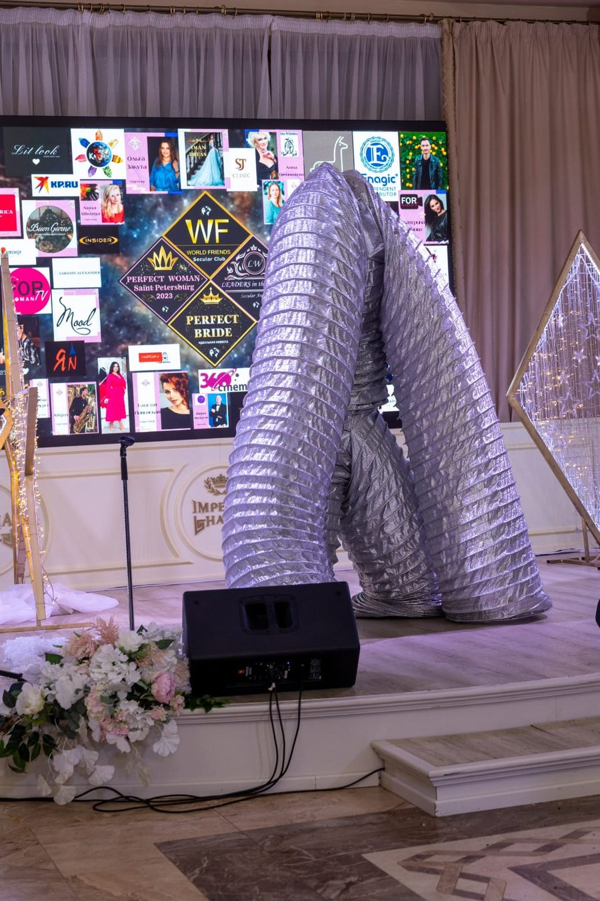

О нём
Из Уфы — в Книгу рекордов России, в театр и в воздух
Николай Балашов родился в Уфе. По собственным словам, цирковая студия в детстве оказалась «намного интереснее», чем дворовая компания — так и остался в цирке, а не на улице. До манежа успел поработать фрезеровщиком, киномехаником и водителем троллейбуса — «в жизни нужно всё попробовать, тогда оно всегда пригодится», и опыт этот, по его словам, в профессии артиста тоже пригодился.
«В жизни нужно всё попробовать — тогда оно всегда пригодится»
Концертную деятельность начал в Томской филармонии — гастроли были тяжёлые: холодные площадки, несколько концертов в день, постоянные переезды, погрузки и разгрузки реквизита своими руками.
С 1984 года — артист цирка. За сорок лет объехал сцены и фестивали Польши, Финляндии, Германии, Турции, Израиля, Кипра, Англии, ОАЭ, Катара, Тайваня, Макао и Гонконга. Сегодня «Шоу Балашова» работает по всей России, а по договорённости выезжает и за рубеж.
Номер начинался как эксперимент: устоять на трёх пластиковых стаканах. «Что-то новое придумывал, старое убирал из номера, усовершенствовал», — так родился эквилибр на катушках, которым заинтересовалась Москва: этот номер и внёс артиста в Книгу рекордов России.
Катушки Николай отложил — жанр слишком нагружает спину для многолетней практики. А вот на вольностоящей лестнице жонглирует до сих пор. Оба жанра он называет экстремальными: «государство, отработав эти жанры 15 лет, уже отправляет на пенсию, и на пенсию уходишь инвалидом».
«Не всем везёт, но мне повезло — я ещё ничего не ломал, не вывихивал»
Гибкие шесты — жанр, в котором в мире работают всего три-четыре театра. Идею подсмотрел у канадского или австралийского цирка, выступавшего на Дворцовой площади — с партнёром делали свой вариант целый год, с большим количеством проб и ошибок. Сегодня в арсенале два шеста высотой 6 метров с гибкостью до 2,5 м на сторону — редкий для России аттракцион, который работает круглый год, в помещении и на улице. В интерактивной части шоу артист наверху раскачивается и кидает в публику шары, а зрители пытаются попасть в него мягким мячом; после — желающие могут подняться и покачаться сами.

Труба-трансформер — увидел номер у американского артиста на фестивале в Дубае и купил его. Когда реквизит истёрся, сшил новый сам — «тяжёлая ручная работа», реквизит сшит в 6 разных цветах. Сольный номер «Космическая фантазия» идёт 8 минут и состоит из трёх труб; есть и парный вариант — «дрессированная труба», где дрессировщица в белом и чёрная труба разыгрывают сцену противостояния.

В 50 лет Николай выучился летать на мотопараплане. А так как всю жизнь связан с цирком и высотой, соединил одно с другим: нашёл пилота Юрия Дыбова с чемпионата лёгкой авиации и предложил совместный проект. Собрал четырёх профессиональных гимнасток на трапеции, сделал сбоку узкую цирковую лестницу для удобного подъёма на раму — и обкатал всё в поле.
Получилось целое воздушное шоу — редкость даже в мировом масштабе (в Новосибирске похожий номер делают на параплане, но это другое — параплан зависит от воздушных потоков, а мотопараплан может держаться в воздухе сколько угодно). Проект вышел дорогим, а затем начался кризис и коронавирус — довести его до больших городских праздников не успели. Съёмка шоу сохранилась на видео.
В Михайловский театр Николая пригласили работать в опере «Богема» — сначала жонглёром на ходулях в сцене «Ярмарка», затем на три года артистом-каскадёром. После — постановка трюков акробатов в опере «Сон в летнюю ночь» Мариинского театра.
Позже пригласили в Театр Музыкальной комедии, где как раз ставили «Принцессу цирка». Николай собрал профессиональных артистов цирка разных жанров и стал постановщиком номеров и руководителем цирковой группы. Разница с манежем ощутимая: в театре — не полные сольные номера, а короткие фрагменты, и выходит труппа всего два спектакля в месяц.
Членом академии Николай стал после знакомства с секретарём академии на съёмках фильма. Обучает артистов кино и театра простейшим цирковым элементам — жонглированию, акробатике: «подготовка у артиста должна быть разносторонняя, он должен жонглировать чем-то — это очень пригодится на съёмках».
«Жизнь у нас одна, и относиться к ней так — прозябать бездарно — это кошмар».